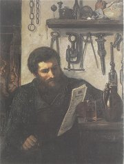

Purkyně: Podobizna kováře Jecha (Politizující kovář)
Marold: Vaječný trh v Praze

Chittussi: Rybník Utopenec
|
ČESKÝ REALISMUS
Realistické tendence nacházíme už v satirách Karla Havlíčka Borovského, prózách Boženy Němcové a dílech Jana Nerudy. Realismus se zde mísí s dalšími vlivy – politickou angažovaností, idealizací nebo biedermeierskou drobnokresbou.
Kritický realismus se v Čechách prosadil o několik desetiletí později než ve světě. První díla v tomto duchu vznikala od 80. let 19. století. Hlavním proudem byla venkovská próza (Nováková, Stašek, Rais, Holeček, Klostermann...). Jednotliví autoři se většinou zaměřují na konkrétní oblast, kterou důkladně znali (Baar na Chodsko, Klostermann na Šumavu). Popisují mezigenerační konflikty (Výminkáři), rozvrstvení venkovské společnosti (Naši) a její vliv na mezilidské vztahy, tradice a sociální problémy. Téma městského prostředí byly méně časté (Herrmann). Někdy se i kritičtí realisté uchylovali k idealizujícím námětům (Pantáta Bezoušek, Otec Kondelík a ženich Vejvara). Jan Herben vydával časopis Čas (Besedy času) (1896-1914), ve kterém publikoval své básně Machar nebo Bezruč (Slezské číslo). Stoupence si v Čechách našel rovněž naturalismus (Čapek-Chod, Šlejhar, bratři Mrštíkové).
Nejvýznamnějšími realistickými malíři byli Antonín Chittussi (1847-1891), Karel Purkyně (1834-1868), Adolf Kosárek (1830-1859), Viktor Barvitius (1834-1902), Luděk Marold (1865-1898) nebo Jakub Schikaneder (1855-1924).

Schikaneder: Vražda v domě
|
Politický a vědecký realismus
Realismus se projevil i v jiných oblastech. Politický a vědecký realismus vyznával Tomáš Garrigue Masaryk (1850-1937), poslanec v říšské radě a pozdější prezident. Kolem jeho časopisu Athenaeum (1883-1893) se zformovala skupina mladých vědců. Ti podrobili kritickému rozboru Rukopis královédvorský a zelenohorský a k velké nelibosti vlastenců oba označili za padělky. Od roku 1886 v Athenaeu vycházely jejich rozbory sociologické (Masaryk), jazykové (Gebauer), historické (Goll), estetické (Hostinský) nebo literární (Vlček). Na Athenaeum navázal nový Masarykův časopis Naše doba (1893-1949).
Co víš o Masarykově působení do vzniku samostatného Československa?
Která Masarykova díla znáš?
Měl by být prezident vědec? Proč?
Které vlastnosti by měl mít prezident? Měl je Masaryk?
Proč si zvolil jméno Garrigue?
Zjisti něco o Masarykových spolupracovnících.
Kosárek: Selská svatba
|
Otakar Hostinský (1847-1910)
Hostinský se zabýval estetikou a teorií umění. Spolu s mladými vědci z okruhu T.G.Masaryka se podílel na kritické analýze Rukopisu královédvorského a zelenohorského. Je autorem pojednání Darwin a drama, O realismu uměleckém nebo Smetana a jeho boj o moderní českou hudbu. Posmrtně vyšla kniha Estetika.
|
Otakar Hostinský: O realismu uměleckém
Stať O realismu uměleckém vyšla časopisecky roku 1890. Hostinský se v ní snažil obhájit realistické tvůrčí postupy. Řeší otázky tendenčnosti v umělecké tvorbě, zobrazování krásy a ošklivosti nebo vztahu umění ke skutečnosti a srovnává realismus s idealismem.
|

Souhlasíš s argumenty Otakara Hostinského? Proč?
Co si myslíš o realistické tvůrčí metodě?
|
Teréza Nováková (1853-1912)
Nováková se narodila i zemřela v Praze. Navštěvovala dívčí školu S.Amerlingové a Náprstkův Americký klub českých dam. Založila časopis Ženský svět. S manželem bydlela v Litomyšli. Jejich syn Arne Novák se proslavil jako literární historik. Napsala sbírku povídek Úlomky žuly (Drobová polévka), historické romány o výjimečných mužích Jan Jílek a Drašar nebo životopisný román Jiří Šmatlán. Vrcholnými realistickými romány jsou Na Librově gruntě a Děti čistého živého. Osudy dcery Karla Havlíčka Borovského popsala v próze Maloměstský román.
Znáš nějakou knihu Arne Nováka?
|
Teréza Nováková: Úlomky žuly
Sbírka povídek Úlomky žuly podává realistický obraz českého venkova. Próza Drobová polévka líčí vztahy v Sedlišti, kde žijí dvě spřízněné rodiny – chudí Boštíkové a bohatí Chlebounovi. Stará Chlebounka žije u dcery Boštíkové, protože byla na obtíž synovi, který jí neposkytl ani vejminek. Všichni čekají, jestli jim pošlou od Chlebounů, kde se koná zabíjačka, alespoň drobovou polévku. Když pro ni Boštíkovi pošlou syna, dostane vynadáno a vrací se domů s prázdnou...
|

Charakterizuj jednotlivé postavy v ukázce.
Mají bohatí příbuzní pomáhat chudším? Proč?
Mají bohatí lidé podporovat chudé?
Je vaše rodina chudá nebo bohatá? Jak se to pozná?
|
Josef Holeček (1853-1929)
Holečkovým rodištěm byly Stožice u Vodňan, zemřel v Praze. Měl se stát farářem, ale živil se jako vychovatel v Záhřebu a pracoval jako novinář a historiograf v Černé Hoře. Zajímal se jihoslovanské prostředí. Vydával časopis Slovanské listy. Překládal bulharské a srbské junácké písně. Aby mohl přeložit Lönnrotův epos Kalevala, naučil se finsky. Jeho memoáry vyšly pod názvem Pero. Rozsáhlý románový epos Naši nedokončil.
|
Josef Holeček: Naši
Selská epopej Naši čítá 10 knih, ve kterých autor líčí život na jihočeském venkově v 60. letech 19. století. S realistickým popisem mezilidských vztahů, lidových obyčejů a zemědělských prací je v rozporu až mýtické pojetí činorodého člověka a lidského společenství. Hlavními postavami románu jsou milenci Anička a Adam, Anýžka Bakulovic, která si hledá ženicha, a sedlák Kojan. Některé části připomínají pohádku, jiné rytířský epos, další idealizují venkovany. Velký důraz Holeček klade na význam křesťanství.
|

Fotografický ateliér Langhans: Josef Holeček
Co nového ses z této ukázky dozvěděl/a?
Václav Brožík: Na pole
|
Ignát Herrmann (1854-1935)
Herrmann pocházel z Horního Mlýna u Chotěboře a zemřel v Řevnicích u Prahy. Založil humoristický časopis Švanda dudák (1882-1930), ve kterém vycházel jeho román U snědeného krámu. Psal fejetony, soudničky a tzv. nedělní povídky. Městské prostředí vylíčil v povídkových sbírkách Pražské figurky nebo Drobní lidé. Napsal humoristické romány Otec Kondelík a ženich Vejvara, Tchán Kondelík a zeť Vejvara, Vdavky Nanyky Kulichovy a co se kolem nich seběhlo nebo Artur a Leontýna. Herrmann měl blízko k Janu Nerudovi, jehož sebrané spisy připravil k vydání.
|
Ignát Herrmann: U snědeného krámu
Příznačně nazvaný román U snědeného krámu líčí postupný úpadek dobráckého obchodníka. Martin Žemla si zařídí kupecký krám. Jeho stálým hostem se stane rytmistr Kyllian, který si nechává nalévat na sekyru. Žemlovy dobroty zneužívá také paní Šustrová, jejíž dceru si nakonec vezme. Při svatební noci ho ale Pavlína odmítne. Když Žemla zjistí, že si žena našla milence a že mu s tchyní vyjedly celý krám, otráví se hlavičkami zápalek. Kyllian v nestřeženém okamžiku smaže řadu čárek, které vyznačují jeho obrovský dluh...
|

Charakterizuj Martina Žemlu. Co si o něm myslíš?
Jaký je tvůj názor na chování Kylliana?
Kterou Nerudovu povídku ti román připomíná? Srovnej obě díla.
Může se člověk otrávit sirkami? Proč?
|
Karel Matěj Čapek-Chod (1860-1927)
Čapek se narodil v Domažlicích a zemřel v Praze. Přídomkem Chod své jméno doplnil, aby se odlišil od mladého spisovatele Karla Čapka, se kterým pracoval v Národních listech. Je autorem naturalistických románů Kašpar Lén mstitel, Turbina, Antonín Vondrejc, Vilém Rozkoč, Jindrové nebo Experiment.

Hanuš Schweiger: Opilecký sen
|
Karel Matěj Čapek-Chod: Kašpar Lén mstitel
Naturalistický příběh vypráví o zedníkovi, který se rozhodne pomstít svého přítele a jeho dceru, která se stala prostitutkou. Kašpar Lén se po návratu z vojny dozvídá, že jeho přítel Kryštof spáchal sebevraždu, protože neunesl, že byl přistižen při krádeži a že jeho dceru a Lénovu milou Mařku zneuctil kupec Konopík. Kašpar se rozhodne Konopíka zavraždit a zločin pečlivě plánuje. Druhý díl románu se odehrává u soudu. Kašpar je souzen za vraždu, protože byl nalezen opilý na místě činu. Všechny jeho odpovědi jsou naprosto zmatené, ale žalobce si myslí, že duševní chorobu pouze předstírá. Proces se vyvíjí v Lénův prospěch, ale Mařka náhle v pominutí smyslů vyzradí, že vraždu společně plánovali...
|
Najdi v ukázce rysy naturalismu.
Je rozdíl mezi plánováním vraždy a skutečnou vraždou?
Jaký je rozdíl mezi vraždou a zabitím?
Jaké tresty za vraždu a zabití určuje český trestní zákoník?
Co jsou polehčující okolnosti?
Zabil Lén Konopíka?
Jaký trest stihl Léna, Mařku, Konopíka a Kryštofa?
|
Josef Svatopluk Machar
(1864-1942)
Machar se narodil v Kolíně a zemřel v Praze. Pracoval ve Vídni jako bankovní úředník. Během 1. světové války byl krátce vězněn. Po vzniku Československa pracoval jako generální inspektor armády. Věnoval se hlavně satirické poezii a epice – cyklus Svědomí věků, veršovaný román Magdalena. V tzv. sporu o Hálka vyzdvihl přínos Jana Nerudy, k jehož odkazu se přihlásil. Byl autorem manifestu České moderny (1895). Machar je považován za tvůrce básnického realismu. Než se přiklonil k českým fašistům, přátelil se s prezidentem Masarykem. Zajímavé jsou jeho vzpomínky Konfese literáta a korespondence Čtyřicet let s Aloisem Jiráskem.
Srovnej Svědomí věků s obdobnými básnickými cykly Legenda věků a Zlomky epopeje.
Přelož do češtiny názvy sbírek Confiteor a Tristium Vindobona.
|
Macharova poezie
Macharův verš je oproštěný od poetismů a blíží se próze nebo hovorovému jazyku. Ve svých básních pranýřuje politické hašteření, malé české poměry, prázdné vlastenčení i církev. Jeho prvotina Confiteor... je osobitým vyznáním z milostné deziluze. Skeptický pohled na svět se ještě prohlubuje ve sbírce Tristium Vindobona I-XX. Kristův odkaz i velké ideály Machar zpochybňuje v Golgatě. Epigramy zařadil do Satiriconu. V epickém cyklu Zde by měly kvést růže a veršovaném románu o prostitutce Lucy Magdalena zpracoval téma trpících a utlačovaných žen.
V cyklu epických básnických sbírek Svědomí věků Machar vyzdvihuje význam antiky – V záři helénského slunce, odmítá křesťanství jako Jed z Judey a s obdivem vzhlíží k Napoleonovi – On. Cyklus uzavírá sbírka Kam to spěje.
Další realisté a jejich díla
Antal Stašek: Blouznivci našich hor, O ševci Matoušovi a jeho přátelích, V temných vírech
Karel Václav Rais: Pantáta Bezoušek, Kalibův zločin, Zapadlí vlastenci, Výminkáři, Západ, O ztraceném ševci
Jindřich Šimon Baar: Jan Cimbura, Paní komisarka, Osmačtyřicátníci, Lůsy
Karel Klostermann: Ze světa lesních samot, V ráji šumavském, Mlhy na blatech
Jan Herben: Do třetího a čtvrtého pokolení
Alois a Vilém Mrštíkové: Rok na vsi
Josef Karel Šlejhar: Kuře melancholik, Peklo, Vraždění, Rozvrat
|
V čem se Macharova poezie liší od tvorby ruchovců a lumírovců? Srovnej náměty, formu i slovník děl.
Najdi v ukázkách příklady ironie a satiry.
Najdi v Macharových básních realistické motivy.
Jak se dívá na české vlastence?
Co chtěl autor vyjádřit básní Na Aventinu?
„Mé koleno se zbožně chvěje, /
jak měl bych kleknout v úžasu, /
když sněním duše obraz spěje /
mých šťastných druhů z Parnasu. //
Hle, „věštec" tu, tam „kníže" trůní, /
zde „králi" tři, tam „slavík" zas, /
a kol hlav nádhernou jim vůni /
kadidla sije modrojas.“
Kterou básnickou školu paroduje Machar v této ukázce z básně Sloky polemické?
|
Internetové stránky
Machar: Řím
Baar: Hanýžka a Martínek
Kramářská píseň o rukopisných bojích
Purkyně: Sova sněžná
|
Doporučená četba
Blažíček, Přemysl: Epičnost a naivita v Holečkových Našich, Praha 1993
Čapek-Chod, Karel Matěj: Kašpar Lén mstitel, Československý spisovatel, Praha 1972
Čítanka českého myšlení o literatuře, Československý spisovatel, Praha 1976
Herrmann, Ignát: U snědeného krámu, Československý spisovatel, Praha 1982
Herrmann, I.: Ze soudní síně, Praha 1984
Holeček, Josef: Naši, Výbor z epopeje (2 svazky), Československý spisovatel, Praha 1973
Hostinský, Otakar: Studie a kritiky, Praha 1974
Hýsek, Miloslav: Ignát Herrmann, Praha 1934
Cháb, Václav: Jan Herben, Praha 1947
Janáčková, Jaroslava: Román mezi modernami, Československý spisovatel, Praha 1989
Jůzl, Miloš: Otakar Hostinský, Melantrich, Praha 1980
Knob, J.: Dvojí cesta s Karlem Václavem Raisem, Praha 1964
Machar, Josef Svatopluk: Básně, Československý spisovatel, Praha 1954
Machar, J.S.: Básně, Československý spisovatel, Praha 1972
Machar, J.S.: Čtyři knihy sonetů a jiné básně, SNKLHU, Praha 1959
Machar, J.S.: Konfese literáta, Československý spisovatel, Praha 1984
Masaryk, Tomáš Garrigue: Česká otázka, Svoboda, Praha 1930
Novák, Arne: O Teréze Novákové, Praha 1930
Nováková, Teréza: Jan Jílek, Jiří Šmatlán, Na Librově gruntě, SNKLHU, Praha 1956
Nováková, T.: Úlomky žuly, NLN, Praha 2001
Polák, Karel: O Antalu Staškovi, Praha 1951
Soldan, Fedor: J.S.Machar, Melantrich, Praha 1974
Šach, V.: Karel Matěj Čapek-Chod, Praha 1949
|
Vypracuj písemný referát o některé z uvedených knih.
Barvitius: Čtvrtek ve Stromovce
Schikaneder: Ulice navečer
|
|